Overview
In this project, our objective was to implement rasterization, aka the process by which vector graphic images are converted/rendered onto the grid of pixels in the framebuffer — with the geometric primitive drawn being triangles. The observed rasterization procedure processes each component by reading in the coordinates of triangles specified by the SVG (scalable vector graphics) file. Given these coordinates, we used sampling to detect whether each pixel on the screen was contained within a triangle, including supersampling/downsampling technqiues to antialias and reduce sampling artifacts (i.e. 'jaggies') in our images. Through utilizing barycentric coordinates, we were able to interpolate color values across each pixel in the triangle; combined with the use of mipmaps and nearest/bilinear sampling, we could even map textures onto the coordinates of target triangles. In creating this pipeline, we learned a great deal about the interplay between pieces of the rasterization pipeline and illustrated how different sampling techniques can drastically impact the quality of the image render.
Section I: Rasterization
Part 1: Rasterizing single-color triangles
Our naive aproach to rasterization utilized a 'point-in-triangle' test using the center of each pixel, iterated across all pixels contained within the triangle's bounding box — defined by the minimum and maximum coordinates of the triangle's points. This ensured that we skipped checking pixels with coordinates outside the window's range. One optimization made here was terminating the rasterization process for each line early if we reached an empty pixel following a series of filled pixels.
For our actual implementation, we once again utilized the 'point-in-triangle' method involving three line tests — calculating of dot products between the tangent and normal vectors for each edge of the triangle, and compares the resultant value to zero to determine whether the coordinate point lies above (> 0), on (=0), or below (< 0) each edge. Depending on the orientation (determined by the ordering of points) of the triangle, we had to swap two points to ensure proper checks on whether the point lies 'above' all edges and thus in the triangle. If the check passes, we accordingly populate that pixel value with the color specified. We further optimized this step by shortening the vector math through uses of max/min operations and reducing the number of variables needed. Additionally, instead of creating new Vector2D classes for each point, we used x and y variables separately as given by the function inputs. Because of the made 'point-in-triangle' method adopted from our naive approach, our algorithm is lower-bounded by (aka no worse than) that which checks each sample in the bounding box in the triangle.
One final optimization we attempted, but didn't get to finish, tried to reduce the number of pixels checked by traversing through the center of the triangle and expand along the x axis. In this implementation, we defined the lowest and highest y-value coordinates of the triangle, as well as the center of the triangle. Then, we created a line that passed through the lowest, the center, and the highest points. Finally, we checked each successive pixel to the left and right of this line until we reached an empty pixel. We hypothesize this didn't fully work due to some triangles being extremely skewed, not working well with integer rounding, but we included this part to show its potential impact on rasterization speed.
| Optimization Type | Simple Shape | Complex Dragon |
|---|---|---|
| Naive bounded triangle | 420ms | 10500 |
| Early-stop bound | 395ms | 9700ms |
| Center-traversal fill | 400ms | 6300ms |
|
|
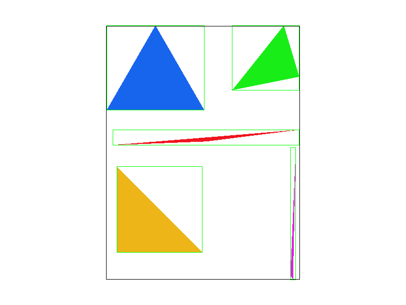
|
|
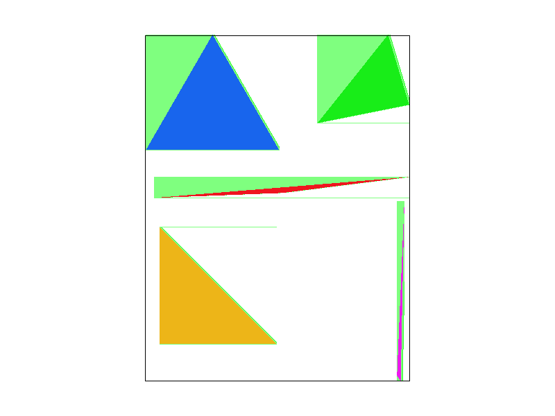
|
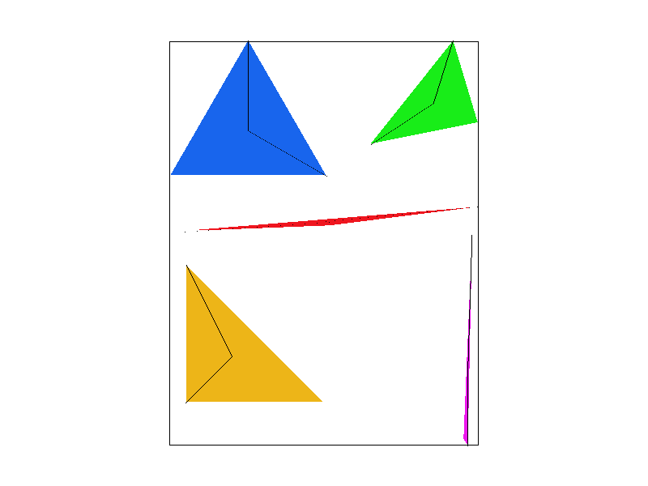
|
|
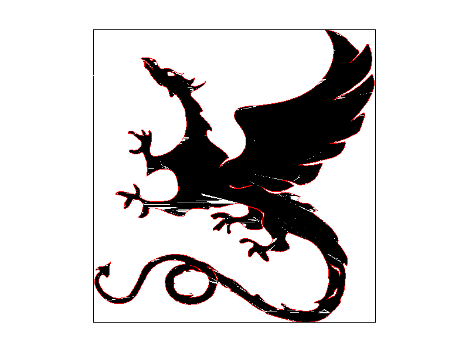
|
Part 2: Antialiasing triangles
In this part, we implemented the supersampling procedure to effectively construct a temporary, higher-resolution framebuffer for the image that becomes downsampled (via averaging sample values within a pixel for smoother transitions) to reduce jagged edges/aliasing artifacts within the rendered image. In our case, we approached the process as follows.
We uniformly divde the pixel into subregions, and sample by conducting the 'point-in-triangle' test onto each subregion and populate a scaled buffer array (by a factor of the square root of the sample rate, to account for more samples) with the appropriate color. Next, when downsampling this larger buffer array, we took the color values of all subregions within any given pixel and averaged them to obtain the final color assigned to that pixel in the framebuffer via the 'resolve-to-framebuffer' function. These averaged values essentially served to make 'blurred' edges that transitioned slower and served to antialias the render.
In the images below, we observe how increasing the sample rate translates to blurring hard edges and removing the aliasing effect of jaggies.

|
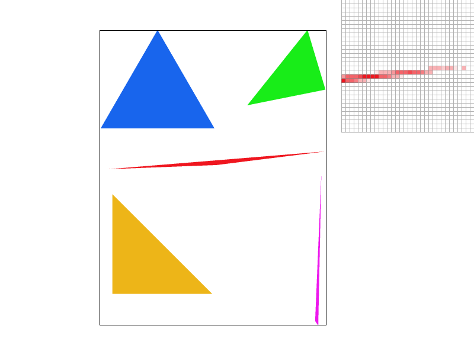
|
Part 3: Transforms
For this part, we decided to explore cubeman's deep passion of ballet. By having the arms of cubeman arc upwards (a common pose in ballet), balance on the tips of his toes through curving his legs, and change his color pallete into light pinks, we made cubeman into a full-fledged ballet star. These changes were implemented through defining matrices that could apply linear transformations onto polygons, inlcuding opeations to scale, rotate, or translate said objects.|
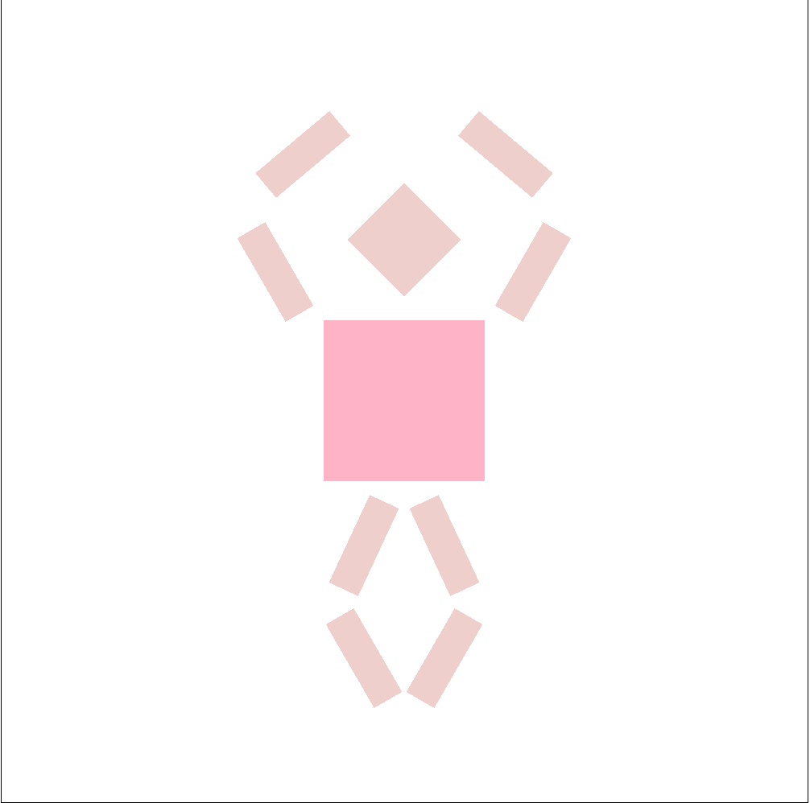
through several rotation operations and color pallete changes. |
Section II: Sampling
Part 4: Barycentric coordinates
Within this part, we hoped to interpolate between varying color values within a triangle, which requires the utilization of Barycentric coordinates — which serves to represent any point inside a triangle as a weighted sum of distances from its vertices, and thus interpolate its color value.
These Barycentric coordinates can be represented as a vector of three values (α,β,γ), where each represents a weight applied to each vertex of the triangle such that α + β + γ = 1.
Each value corresponds to a point in the triangle. (1,0,0) means the location is closest to the 0th vertex, whereas (0,1,0) means the location is closest to the 1st vertex, and (1/3,1/3,1/3) means the location is at the center of the triangle.
The two images shown below are examples of using Barycentric coordinates to interpolate for colors in the triangles based on its barycentric coordinate, with the gradient being based on how far each pixel is close to each vertex.
|
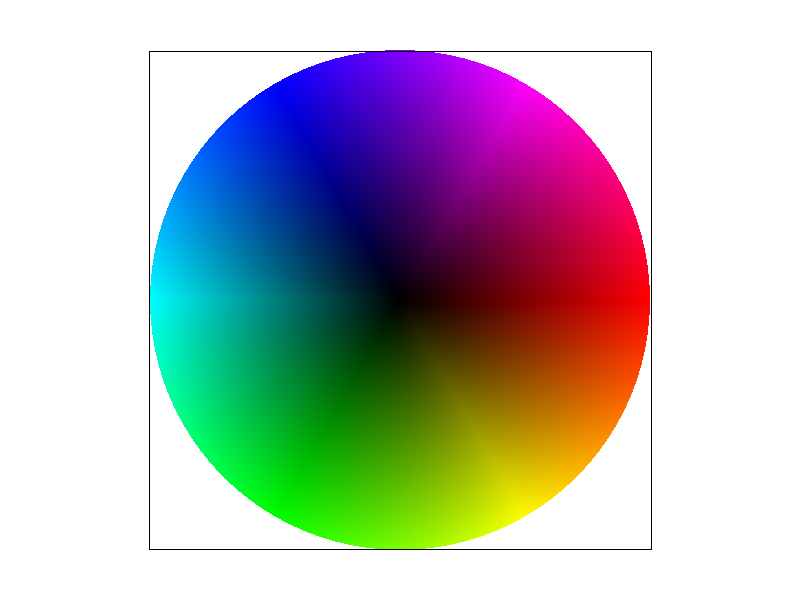
|
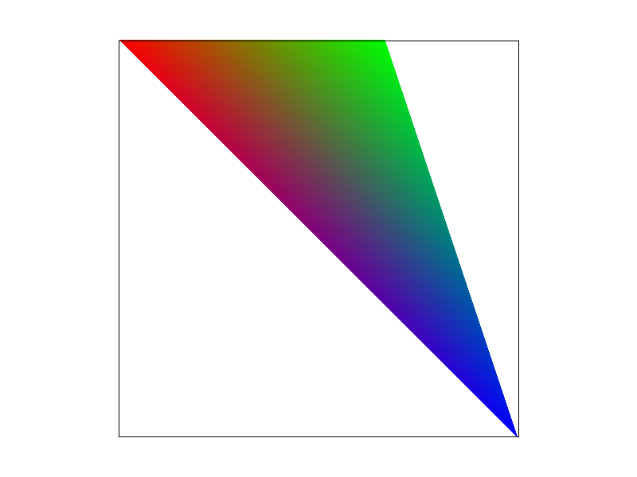
|
Part 5: "Pixel sampling" for texture mapping
Now that we have implemented Barycentric coordinates, we can now easily convert triangle coordinates into texture coordinates, allowing us to map textures onto triangles.
In the most naive approach, a nearest neighbor sample will get the color of the nearest pixel that was mapped onto the texture. This approach can potentially lead to aliasing effects, as well as jaggies.
In order to reduce the aliasing effects, we can use bilinear filtering instead. Here, we sample 4 nearest pixels, and return a cololinearly interpolated between the pixel's colors based on how close it is to each. In this way, we can approximate colors in between.
Having implemented Barcyentric coordinates in the previous part, in this part, we wanted to map texels from the texture space onto associated pixels within the screenspace through pixel-sampling methods. In our naive appraoch, we utilized the 'nearest neighbor' sampling technique which obtains the color of the nearest texel (according to a mapping between pixel and texture map values) and populated the value of the according pixel with said color. However, this approached tended to cause various aliasing effects, including jaggies. In order to conduct antialiasing, we used bilinear filtering. In this process, we idenitfy the nearest 2x2 grid of texels to perform a series of three LERP (two along X-axis, and one along Y-axis) operations that effectively allows us to return a color linearly interpolated between the pixel's colors depending on its proximity to each.
Looking at the images below, we observe both nearest neighbor and bilinear filtering at sample sizes 1 and 16. Between the nearest neighbor and bilinear sampling with sample rate of 1, we observe that both images have more distinct pixel colors (the pixels don't necessarily 'blend' together), though the latter appears to perform slightly better under the zoomed view. When increasing the sample rate to 16, we observe that supersampling improves the performance of both with bilinear sampling still outperforming nearest neighbor slightly. The largest difference between the two methods is likely when the the screen pixel area is larger than the texel area (otherwise known as magnification), aka when multiple pixel samples are taken for each texel sample — in which case nearest neighbor will look less 'blurred' and more pixelated.
|
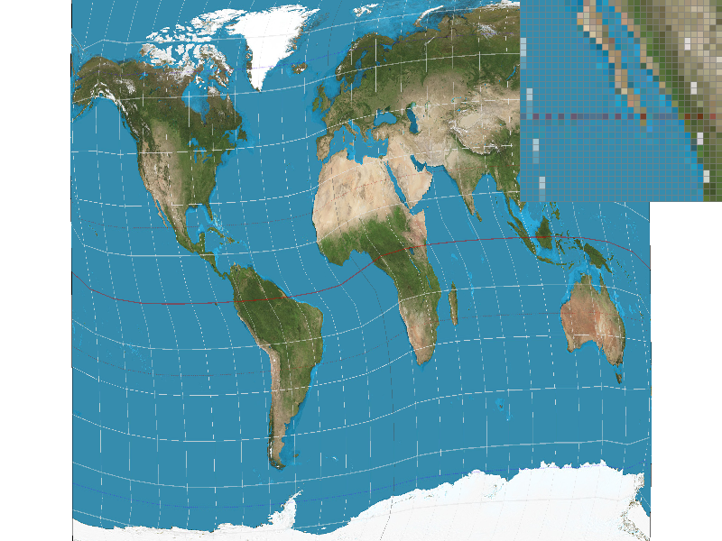
|
|
|
|
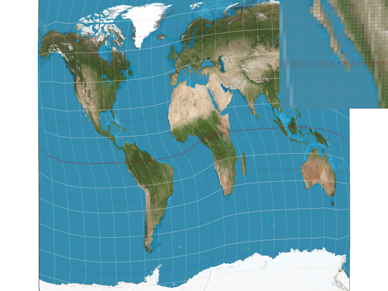
|
Part 6: "Level sampling" with mipmaps for texture mapping
In this part of the project, we sought to implement level sampling — the process by which an image with an appropriate level of detail (based on the distance from the camera with closer needs more details, further needs less) is sampled to attenuate high frequencies and thus reduce antialiasing. This is achieved through generating mipmaps of the original texture at the start of the program of different sizes. Mipmaps are defined as downsized versions of the original texture that average any details that are lost in the process, thereby decreasing the high frequencies while keeping the overall colors.
Once these mipmaps are generated, we can use different mipmaps based on the level of that coordinate approximating the footprint of that texture on the screen.
Here, we can examine 3 different texture sampling strategies:
- Pixel sampling: Samples the single nearest pixel from the texture. (better speed, better memory usage, worse antialiasing power)
- Level sampling: Samples the 4 nearest pixels from the texture, and interpolates between its colors based on the actual coordinate of the sampled pixel. (worse speed, OK memory usage, good antialiasing power)
- Increasing samples per pixel: Increases the amount of samples taken per pixel, and then averages at the end. Requires much more memory and calculations. (worst speed, worst memory usage, but decent antialiasing power)
|
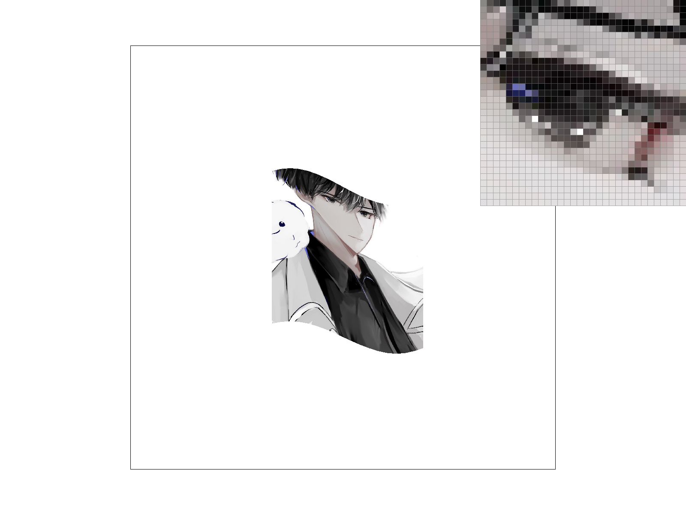
|
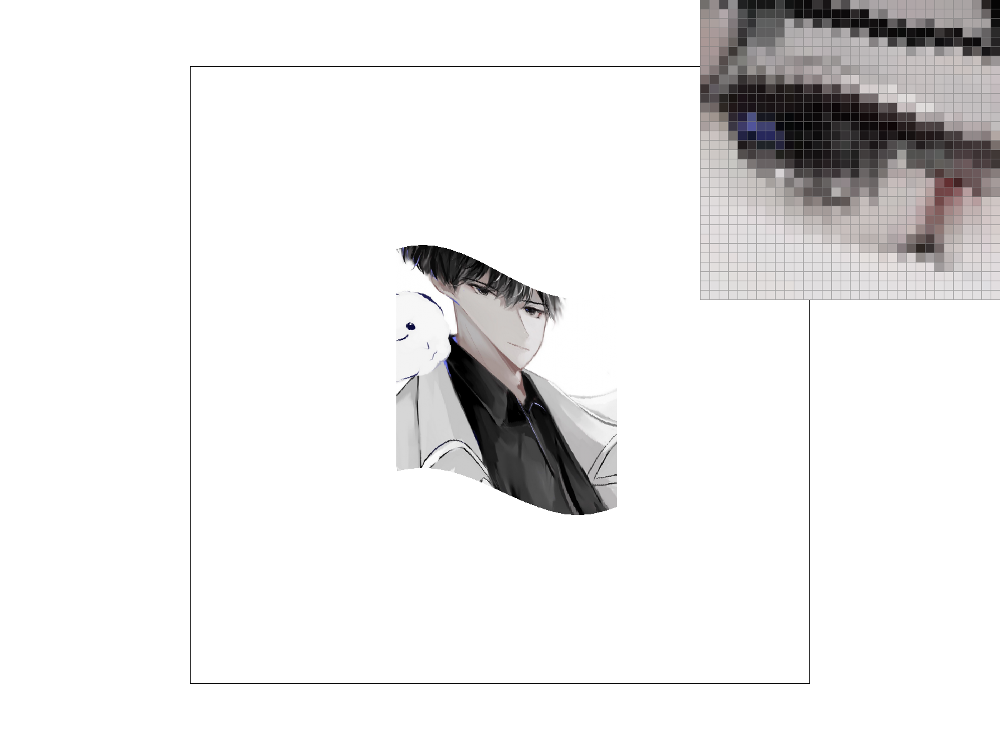
|
|
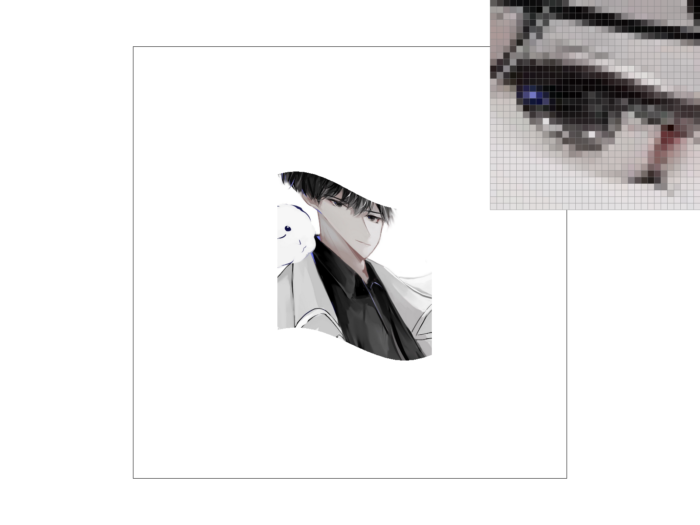
|
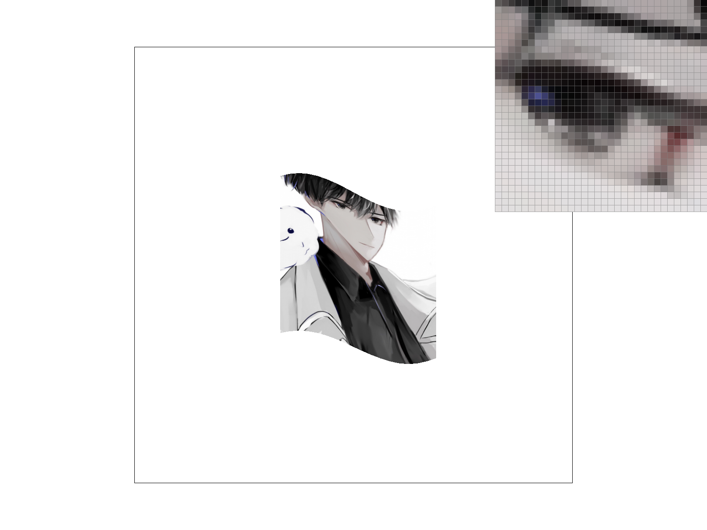
|
Section III: Art Competition
Part 7: Draw something interesting!
Here is our svg art competition submission. The title of this piece is "Another Lost to the Sauce".
In order to create this SVG, we noticed that inputting values by hand would not have been the most efficient solution.
Therefore, we invented an SVG editor from scratch using a Java based graphics engine called Processing.
This graphics engine supports only polygon SVG elements, which was enough to make the entire art piece.
It supports choosing colors, adding and deleting shapes and vertices, saving/loading from text files, and exporting copy paste-able svg code into the console.
To run this program one simply needs to download Java Processing, open the file, create a data.txt file, and start drawing.
Instructions are included in the program.
The most difficult part of creating the program was probably figuring out the high-level user interaction steps, such as figuring out
how to implement clicks and when the editor should select different shapes on the screen. In terms of math, the only difficult part was
figuring out whether or not the mouse was inside a polygon or outside of it. For this, I used the Jordan curve theorem, which checks how
many times a ray intersects the lines in the polygon. An even number of intersections means the point is outside of the polygon, and odd means inside.
We probably could have used an existing SVG editor, but where's the fun in that? ;)
|
|
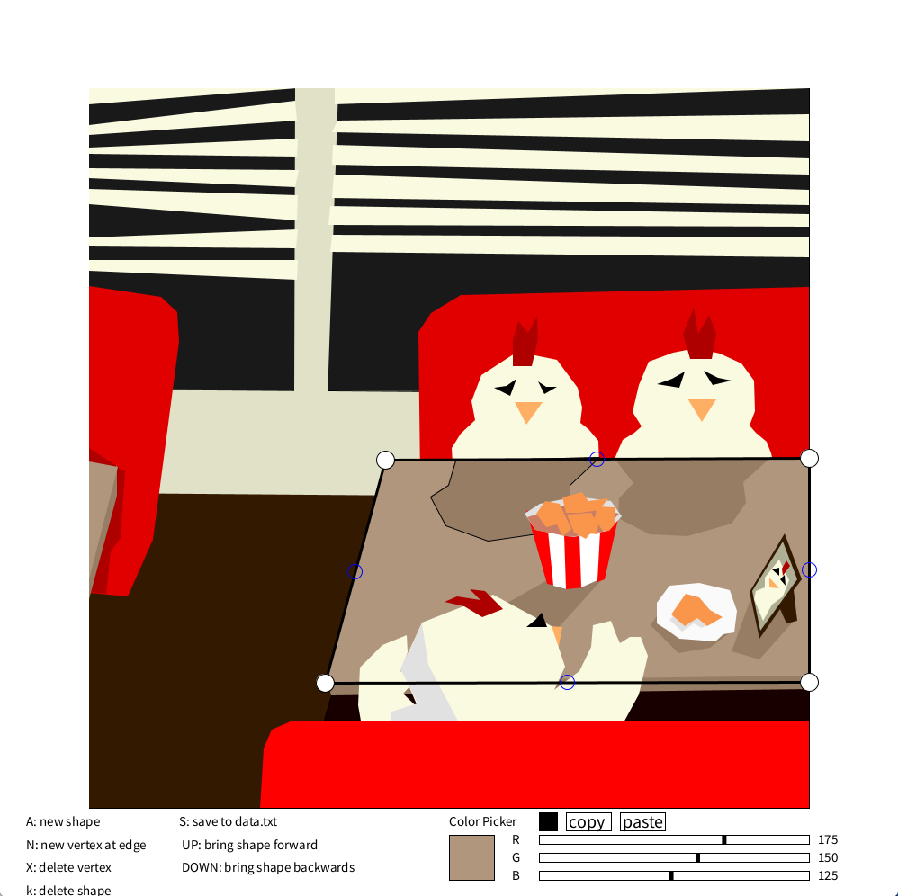
|